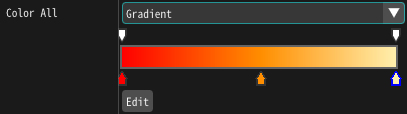
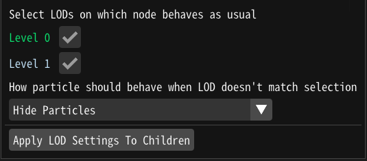
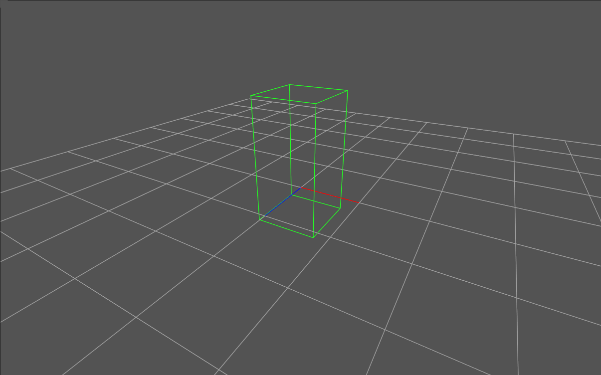

共通
グラディエント
グラディエントで色を指定する機能が追加されました。

Level of Detail
距離に応じてパーティクルの振る舞いを変更し、エフェクトを軽量化する機能が追加されました。

破棄ルール
指定された範囲内にパーティクルが入る、もしくは出るとパーティクルが破棄される範囲を指定する機能を追加しました。

トリガー
アプリケーション側から特定のパーティクルを削除したり、生成したりする機能を追加しました。
回転
パーティクルがカメラの方向を向くように回転する機能を追加しました。
リボン、軌跡
色の時間
リボンや軌跡の色を決めるための時間の取得元設定する機能を追加しました。
マテリアル
新規ノード
ライト、ノイズ、グラディエントノードが追加されました。
他
生成時間の補間対応
少数の時間に生成されたパーティクルが親の位置を補間して表示するようになりました。
例えば、高速に移動している親パーティクルの子を等間隔に生成できるようになりました。
パフォーマンスの改善
エフェクトの一時停止や画面外にエフェクトがある時のパフォーマンスを改善しました。